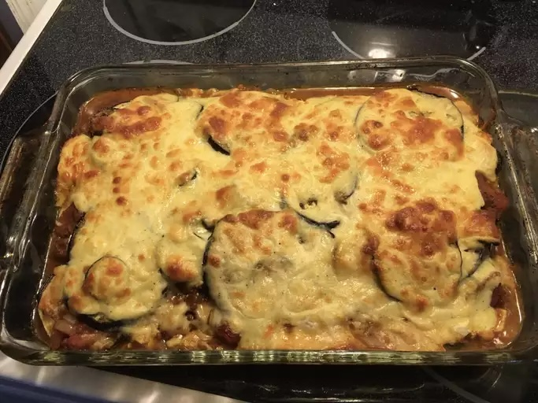

Vegetarian Moussaka

Description
This vegetarian moussaka recipe always gets rave reviews from vegetarians and non-vegetarians alike. It is easy to make, but takes time. Pairs well with salad. Enjoy!
Ingredients
- 1 eggplant, thinly sliced
- 1 teaspoon salt, or more as needed
- 1 tablespoon olive oil, or more as needed
- 1 large zucchini, thinly sliced
- 2 potatoes, thinly sliced
- 1 onion, sliced
- 1 clove garlic, chopped
- 1 tablespoon white vinegar
- 1 (14.5 ounce) can whole peeled tomatoes, chopped
- ½ (14.5 ounce) can lentils, drained with liquid reserved
- 2 tablespoons chopped fresh parsley
- 1 teaspoon dried oregano
- ground black pepper to taste
- 1 cup crumbled feta cheese
Sauce
- 1 ¼ cups milk
- 2 tablespoons all-purpose flour
- 1 ½ tablespoons butter
- 1 pinch ground nutmeg
- ground black pepper to taste
- 1 large egg, beaten
Topping
- ¼ cup grated Parmesan cheese
Steps